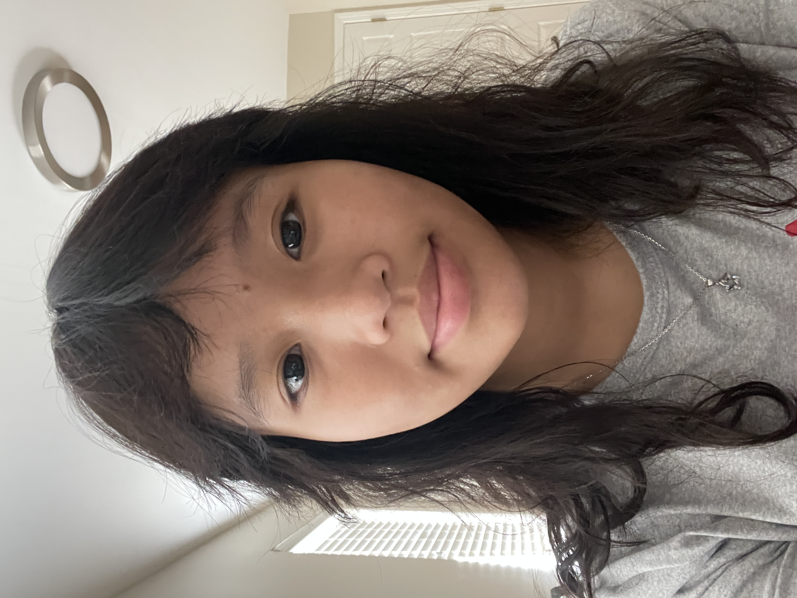

Vi Nguyen
Lawrenceville, Georgia Chapter Outreach Officer
Hello! My name is Vi Nguyen and I’m a senior at Brookwood High School. I joined this nonprofit because I believe that by being a part of this organization, I’ll be able to contribute in meaningful ways and truly help to create positive impacts on people’s lives.
I’m passionate about STEM, especially Healthcare, and I love to help people whenever I can. In my free time, I enjoy going outdoors, painting, and hanging out with my friends.